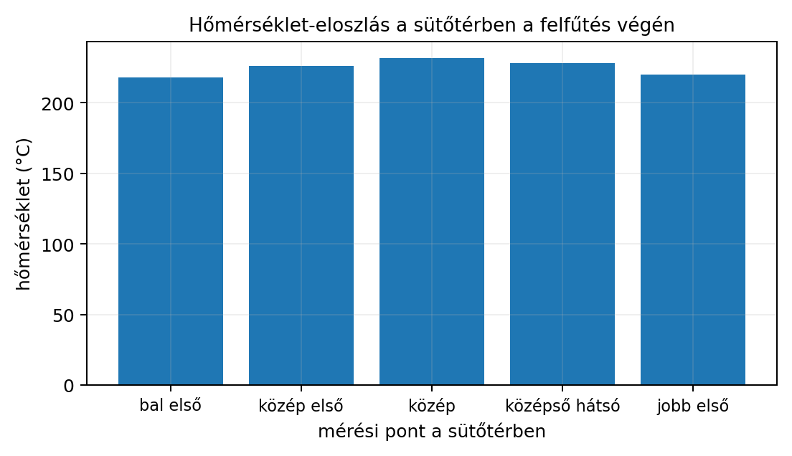

Hajnali sütéskor a pék azt tapasztalja, hogy a kenyér gyönyörűen megkelt, a bemetszéseket szépen elvégezte, de a sütőtérbe vetés után a kenyér nem „ugrik meg”, a héja fénytelen, a vágások nem nyílnak ki. Ugyanaz a tészta, ugyanaz a kemence, a kolléga a múlt héten mégsem ezt tapasztalta. A különbség a kemence sütéstechnikai beállításában van, leggyakrabban a gőzölésben, a vetési rendszer hibájában vagy a sütőtér hőmérséklet-eloszlásában. Ha a tanuló megtanulja a vetési rendszerek, a gőzfejlesztés és a mérőeszközök használatát, a hibát számszerűen, megismételhetően tudja azonosítani, nem csupán „érzésből” javítgat.
A szerelt alagút- vagy kamrás kemence sütőtere nem egyetlen hőmérsékletű tér. A felfűtés végén a sütőtér különböző pontjain kissé eltérő hőmérsékletet lehet mérni, és ez a késztermék színére, térfogatára és átsültségére is hat. A következő ábra egy ötpontos mérés szemléltető eredményét mutatja.

Az oszlopdiagram öt különálló mérési pontot mutat, ezért nem kötöttük össze őket vonallal: a pontok közötti hőmérsékletet nem mértük. Az ábra nem a „rossz” vagy a „jó” kemence bizonyítéka, hanem azt mutatja, hogy a péknek ismernie kell a saját kemencéjének forróbb és hűvösebb pontjait. A hőmérséklet-eloszlás mérése ezért nem laboratóriumi játék, hanem a napi sütési sorrend és a sütőtér bevetési stratégiájának alapja.
Definíció. A vetés a megformázott, megkelt tészta szándékolt, ellenőrzött módon történő behelyezése a sütőtérbe. A vetési rendszer ennek a műveletnek az eszköze és munkaszervezési módja: kézi lapát, vetőszalag vagy vetőszerkezetes kocsi.
A vetési rendszer kiválasztása összefügg a kemence típusával (lásd az Épített és szerelt kemencék alfejezetet), a termék méretével, a tételnagysággal és a munkabiztonsággal.
A legegyszerűbb eljárás. A pék hosszú nyelű, lapos sütőlapáttal helyezi a tésztát a sütőtér aljára vagy a sütőlemezre.
Gépbiztonság. A forró sütőtér elé hajolni tilos. A lapátot két kézzel, stabil testtartással kell vezetni, és figyelni kell a sütőajtó gőzkilövellésére. A sütőajtó kinyitása előtt a kemence gőzterét a páraelszívóval vagy a kéménycsappantyúval csökkenteni kell, ha a gépkönyv ezt megengedi.
Az alagút- és egyes szakaszos kemencékben a tészta a sütőszalagra kerül, és a szalag automatikusan viszi be a sütőtérbe.
Előnye: egyenletes sebesség, folyamatos gyártás, kevesebb kézi beavatkozás, jobb reprodukálhatóság.
Hátránya: a szalag hőmérsékletének és sebességének helytelen beállítása a tészta aljának leragadását, torzulását okozhatja; a rendszer kevésbé rugalmas az egyedi formájú termékekhez.
Gépbiztonság. A vetőszalag mozgó részei, terelőgörgői és meghajtó egységei csak leállított és újraindítás ellen biztosított állapotban tisztíthatók. A szalag vészleállítóját minden műszak elején próbával kell ellenőrizni, ha a gépkönyv így írja elő.
A kelesztőkocsi a tésztával együtt, sínen vagy emelő szerkezeten gurul a kemencébe. A vetőszerkezet a kocsi behelyezését és kivételét segíti.
Gépbiztonság. A megrakott kocsi nehéz, ezért a sínpálya, a rögzítő és a kocsi kerekeinek állapotát minden használat előtt ellenőrizni kell. A kemence ajtaját vezetett módon kell nyitni-zárni, hogy a gőz és a forró levegő ne csapjon a dolgozóra.
A három vetési rendszert az alábbi tabló hasonlítja össze. A kézi vetésnél (A) a lapát (1) hosszú nyele (2) miatt a kezelő (3) oldalt, két kézzel, stabil terpeszállásban dolgozhat, és nem hajol a sütőtér elé. A vetőszalagnál (B) a vászonszalag (1) terelőgörgőkön (2) fut, a meghajtást védőburkolat takarja (3), a vészleállító (4) a kezelő keze ügyében van, a sraffozott behúzási pont (5) pedig az a hely, ahol a szalag a görgőre fut. A vetőkocsinál (C) a tészta a polcokon (1) marad, a kihúzható vetőfelület (2) juttatja a sütőtérbe, a kocsi sínen (3) halad.
A vetőszalag vészleállítója (B4) a szalagot megállítja, de nem választja le: elakadt tészta eltávolítása vagy tisztítás előtt a szalagot a főkapcsolóval le kell választani és újraindítás ellen biztosítani. A HTML-kiadásban az alkatrészekre mutatva rövid magyarázat jelenik meg, a védőelemek és a veszélyzóna rétege ki-be kapcsolható.
Definíció. A sütőipari gőzölés célja, hogy a sütés első szakaszában a sütőtér nedvesített, forró légtere késleltesse a tésztadarab felületének hirtelen kérgesedését, elősegítse a felületi keményítő csirizesedését és a kemencerugást (oven spring). A gőzölés nem a tészta „nedvesen tartása” a sütés végén, hanem időben korlátozott, a sütőtér elejére ütemezett párabevitel.
A gőzfejlesztés módjai:
A gőzmennyiség megadható a bejuttatott víz tömegével (kg vagy l) vagy gőzárammal (kg/h) egy sütési ciklusra vonatkoztatva. A gyakorlatban a pék gyakran a bekapcsolási időt állítja be: például 50–60 g-os zsemléknél 3–6 s gőzbevezetés, 1 kg-os kenyérnél 6–12 s (tanulási példa; termék- és gépfüggő, ezért a tényleges értéket az üzemi technológiai lap és a gépkönyv alapján kell ellenőrizni).
Példa. Ha a gőzfúvóka a gépkönyv szerint 0,15 kg/s vízből képzett gőzt juttat a sütőtérbe, és a technológiai lap 6 s gőzölési időt ír elő, akkor a bejuttatott víz tömege:
Ez a szám csak akkor érvényes, ha a fúvóka valóban a gyártói névleges teljesítményen dolgozik; a vízkőlerakódás és az eltömődés ezt csökkentheti.
Páraelszívás. Amikor a tészta már megszilárdult és a kívánt kéregszín kialakulóban van, a felesleges nedvességet el kell távolítani a sütőtérből. Ezt a kemence kéménycsappantyújának nyitásával vagy külön páraelszívó ventilátorral végzik. A páraelszívás elmaradása vizes, gumiszerű héjat, sápadt színt és a hűlés során gyorsabb felpuhulást okozhat. A páraelszívás (a gőz elengedése) időpontja termékfüggő: kenyérnél gyakran a sütés első harmada után, más terméknél a sütés vége felé (tanulási példa, ellenőrizendő: üzemi technológiai lap). A héj fényét a sütés eleji gőzölés adja, a páraelszívás a héj szárítását és ropogósságát szolgálja.
A gőzölés és a páraelszívás időrendjét az alábbi idődiagram foglalja össze egy 1 kg-os kenyér sütési ciklusán (szemléltető modell). A felső sáv a sütőtér hőmérsékletét mutatja: vetéskor a hideg tészta és az ajtónyitás miatt a hőmérséklet esik, majd visszaáll. A középső sáv a vetés utáni gőzlöketet és a sütés első harmada után nyitott csappantyút (páraelszívás) jelöli. Az alsó görbe a tésztafelület hőmérséklete: amíg a felület a harmatpont alatt van, a gőz lecsapódik rá (kondenzáció – csirizesedés – fény); utána a nedves felület kb. 100 °C-on párolog, a páraelszívás után pedig szárad, kéreg képződik és barnul.
Az ábra megmutatja, miért számít a hideg tésztafelület: a gőz csak addig hat, amíg a felület a harmatpont alatt van, ezért a gőzt közvetlenül a vetés után kell bevezetni. A HTML-kiadásban a gőzölési idő és a páraelszívás kezdete csúszkával állítható, és a kalkulátor kiírja a várható minőségi következményt (például fénytelen héj kevés gőznél, gumis héj késői páraelszívásnál); a görbék szemléltető modellek, a tényleges beállítást a technológiai lap és a gépkönyv adja (ellenőrizendő: üzemi technológiai lap).
Definíció. A harmatpont az a hőmérséklet, amelyre a levegőt lehűtve a benne lévő vízgőz telítetté válik, és megkezdődik a kicsapódás. A sütőtérben a hidegebb tésztadarab felülete a nedves forró légtérben gyakorlatilag kondenzációs felületként viselkedik: a vízgőz a tészta felületére csapódik, vékony nedves réteget képez, amely a keményítő csirizesedésén keresztül elősegíti a héj rugalmasságát és a térfogat kialakulását.
A relatív páratartalom:
ahol a levegőben lévő vízgőz parciális nyomása, pedig az adott hőmérsékleten uralkodó telítési gőznyomás. A sütőtérben a hőmérséklet magas, ezért a relatív páratartalom számszerű értéke alacsony lehet akkor is, ha a gőzmennyiség elégséges; ezért a gyakorlatban a gőz adagolási időt és a páraelszívás időpontját rögzítik, nem egyetlen páratartalom-értéket hajkurásznak.
A hőmérséklet-eloszlás a sütőtér különböző pontjain mért hőmérsékletek együttes képe. Az egyenletesség azt mutatja, mennyire forrók az alsó, felső, első és hátsó zónák. A péknek ismernie kell:
A hőmérséklet-visszaállás azt mutatja, mennyi idő alatt tér vissza a sütőtér a beállított értékre a vetés okozta hőmérsékletesés után. A lassú visszaállás sápadt, kisebb térfogatú terméket okozhat, mert a tészta a kritikus első 5–10 percben alacsonyabb hőmérsékleten sül.
A péknek nem kell laboratóriumi műszerekkel dolgoznia, de a napi szintű, üzemi mérésekhez az alábbi eszközöket és módszereket ismernie kell:
A sütéstechnikai jellemzők mérésének javasolt minimális elemei:
A méréseket úgy kell dokumentálni, hogy később visszakereshető legyen: dátum, műszak, kemenceazonosító, termék neve, mért értékek és beavatkozások. Ez a kemencenapló vagy sütési jegyzőkönyv része.
Cél: A tanuló beállítja a gőzölés mennyiségét és idejét, felméri a kemence hőmérséklet-eloszlását, és az adatokat a naplóban rögzíti.
Eszközök és anyagok: adott kemence, gőzfejlesztő vagy gőzcső, stopper, beépített hőmérő, kézi infrahőmérő, maghőmérő szonda, adatgyűjtő (ha van), kemencenapló, hőálló kesztyű, hosszú ujjú munkaruha, arcvédő.
Higiénia. Tiszta munkaruha, hajháló, ékszer nélkül, a sebek vízhatlan, színes kötéssel fedve, alapos kézmosás; fertőző betegség (hasmenés, hányás, gennyes seb) esetén élelmiszerrel nem dolgozhatsz. Ellenőrizd a munkaterület, a lapátok és a lemezek tisztaságát. A mérőeszköz, különösen a maghőmérő szonda, élelmiszerrel érintkező részét használat előtt és után tisztítani, fertőtleníteni kell a pékség takarítási utasítása szerint. A sütőtérbe helyezett mérőeszköz nem lehet szennyezett, mert a forró felületre kerülő szerves szennyeződés füstöt és kellemetlen szagot okozhat.
Gépbiztonság. A kemence és a gőzrendszer üzem közben forró, a gőz égési sérülést okoz. A sütőajtót csak a gépkönyv szerinti módon, a gőz lecsapódása után, védőkesztyűben és arcvédővel szabad nyitni. A gőzszelepeket, csapokat lassan, az előírt sorrendben kell működtetni. A mérést tanuló csak betanítás után, felügyelettel végezheti.
Lépések:
Ellenőrzési pontok:
Egy kis pékségben a pék azt tapasztalta, hogy a kenyerek héja fokozatosan fénytelenné vált, a bemetszések nem nyíltak, bár a kelesztési idő és a sütőtéri hőmérséklet változatlan volt. A gőzölési időt stopperrel ellenőrizve kiderült, hogy a beállított 8 s helyett csak 2–3 s-ig jött gőz. A gőzfúvóka vízkövesedett, a furatok részben eldugultak. A pék a fúvókát a gépkönyv szerint, leállított és lehűlt berendezésen tisztította, majd ismét felvette a sütéstechnikai jellemzőket. A következő sütésnél a hőmérséklet-eloszlást is felmérte, és a kenyereket a sütőtér melegebb zónáiból a hűvösebbek felé haladva ütemezte át. A hiba nem a tésztában, hanem a kemence gőzrendszerében és a vetési sorrend ismeretében volt.
Hiba 1: Túl sok gőz. A termék szétfolyik, a héj
vastag, gumiszerű, esetleg a sütőszalagra ragad.
Ok: hosszú gőzölési idő vagy hibás gőzszelep.
Megelőzés/javítás: ellenőrizd a gőzölési időt, a
fúvókát, és a páraelszívás időzítését.
Hiba 2: Kevés gőz. A bemetszések nem nyílnak, a héj
hamar megkeményedik, a kenyér térfogata kicsi.
Ok: eldugult fúvóka, alacsony víznyomás, elmaradt
gőzbevezetés.
Megelőzés/javítás: mérd a vízfogyasztást, tisztítsd a
gőzrendszert, állítsd vissza a technológiai időt.
Hiba 3: Páraelszívás elmarad. A késztermék nedves
tapintású, a kéreg hamar felpuhul.
Ok: a kéménycsappantyú zárva maradt, a páraelszívó nem
indult.
Megelőzés/javítás: a technológiai lap szerinti
páraelszívási időpontban ellenőrizd a csappantyú állását és a ventilátor
működését.
Hiba 4: Hőmérséklet-eloszlás figyelmen kívül
hagyása. A sütőtér egyik oldalán rendszeresen sötétebb vagy
sápadtabb a termék.
Ok: a vetési sorrend nem veszi figyelembe a mért
eloszlást, a sütőtér nincs megfelelően légtelenítve.
Megelőzés/javítás: végezz eloszlásmérést, a forró
zónába kevésbé érzékeny terméket, vagy rövidebb sütési időt állíts be; a
légkeverést a gépkönyv szerint állítsd.
1. feladat (A). Sorold fel a három fő vetési rendszert, és mindegyikhez írj egy előnyös és egy kockázatos jellemzőt.
2. feladat (A). Egy gőzfúvóka névleges teljesítménye 0,18 kg/s. A technológiai lap 7 s gőzölési időt ír elő. Mennyi víz kerül a sütőtérbe egy ciklus alatt?
3. feladat (B). A kemence sütőterében öt ponton a következő hőmérsékleteket méred: 221 °C, 227 °C, 233 °C, 225 °C, 219 °C. Számítsd ki az átlaghőmérsékletet és a legnagyobb eltérést az átlagtól.
4. feladat (B). Rendezd sorrendbe a gőzölés beállításának lépéseit: (a) fúvóka ellenőrzése, (b) hőmérséklet-eloszlás felvétele, (c) gőzölési idő beállítása, (d) próbasütés, (e) páraelszívás időzítése, (f) dokumentálás.
5. feladat (C). A kenyér a sütőtér egyik sarkában mindig laposabb és sápadtabb, mint a többi. Milyen méréseket végeznél el, és milyen javítási lehetőségeket javasolnál?
6. feladat (D). Készíts egy rövid mérési tervet a rendelkezésedre álló eszközökkel (beépített hőmérő, infra hőmérő, stopper, maghőmérő) a kemence hőmérséklet-visszaállásának vizsgálatára. Milyen adatokat rögzítenél?
Önellenőrzés – válaszok
1. feladat (A). Lapátos: előnye a rugalmasság, kockázata a fizikai megterhelés és az egyenetlen vetés. Vetőszalagos: előnye az egyenletes gyártás, kockázata a szalag hőmérséklet- és sebességfüggő leragadás. Vetőkocsis: előnye a tészta sérülésének elkerülése, kockázata a nehéz kocsi mozgatása és a lemez hőmérséklet-különbsége.
2. feladat (A). .
3. feladat (B). Összeg: , átlag: . Eltérések: , , , , ; legnagyobb eltérés: 8 °C.
4. feladat (B). Helyes sorrend: a, b, c, d, e, f. (Előbb ellenőrizzük a gőzrendszert, majd mérjük az alapállapotot, beállítjuk a gőzt, próbasütéssel ellenőrzünk, időzítjük a páraelszívást, végül dokumentálunk.)
5. feladat (C). Először hőmérséklet-eloszlást mérnék a sütőtérben (legalább 5 pont), majd a sütési sorrendet és a légkeverést vizsgálnám. Ha az adott sarok hidegebb, a terméket a melegebb zónába helyezem, vagy a sütési időt növelem; ha a légkeverés egyenetlen, a gépkönyv szerint ellenőrzöm a ventilátort. A változtatást dokumentálom, és újramérem az eloszlást.
6. feladat (D). Terv: felfűtöm a kemencét az üzemi hőmérsékletre. A beépített hőmérővel rögzítem a kezdő hőmérsékletet. Hideg, ismert tömegű tésztát vetek a sütőtérbe. Stopperrel mérem a vetés utáni hőmérséklet legalacsonyabb értékéig eltelt időt, majd azt, amíg a hőmérséklet visszaáll a beállított értékre. A sütőszalag/lemez hőmérsékletét infrával is ellenőrzöm. Rögzítem a beállított és mért értékeket, a visszaállási időt, a tészta tömegét és a sütőtér azonosítóját.
A kemence vetési rendszere lehet lapátos, vetőszalagos vagy vetőkocsis; mindegyiknek más az előnye, kockázata és gépbiztonsági rendje. A gőzfejlesztés a sütés elejére ütemezett párabevitel, amely a hideg tészta felületén történő kondenzációval segíti a keményítő csirizesedését és a kemencerugást. A gőzmennyiséget a gőzölési idővel és a gőzfejlesztő vízfogyasztásával vagy a fúvóka névleges teljesítményével lehet jellemezni. A páraelszívás (időpontja termékfüggő, tanulási példa) távolítja el a felesleges párát, hogy a héj kiszáradjon és ropogós legyen; a héj fényét a sütés eleji gőzölés adja. A harmatpont az a hőmérséklet, amelyen a levegőben lévő gőz kicsapódik; a sütőtérben a tészta hideg felülete viselkedik kondenzációs felületként. A hőmérséklet-eloszlást több ponton, beépített hőmérővel, infrahőmérővel vagy adatgyűjtővel kell felvenni, dokumentálni, és a vetési sorrendnél figyelembe venni. Ezek az ismeretek közvetlenül szükségesek az Olaj- és gázégők, biztonsági automatikák és a kemence munkavédelme alfejezetben, és a Kemencefelfűtés, vetés, sütési sorrend és gőzölés gyakorlatában.
Az alfejezetben használt gőzölési időkre, gőzmennyiségre, hőmérséklet-eloszlásra és átsültségre vonatkozó számok mind tanulási példák, nem mért üzemi adatok. Kiadás előtt ellenőrizni kell: